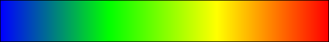
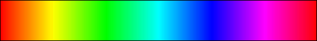
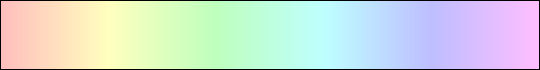
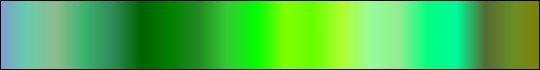
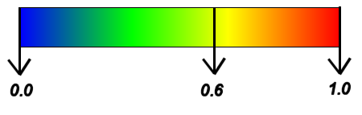

- java.lang.Object
-
- java.awt.Component
-
- java.awt.Container
-
- javax.swing.JComponent
-
- javax.swing.JPanel
-
- org.sm.smtools.swing.util.JGradientColorMap
-
- All Implemented Interfaces:
- java.awt.image.ImageObserver, java.awt.MenuContainer, java.io.Serializable, javax.accessibility.Accessible
public final class JGradientColorMap extends javax.swing.JPanelTheJGradientColorMapclass provides a gradient colour map.A gradient colour map provides a visual display of a bar with a certain specified spectrum:
Bone:

Copper:

Discontinuous blue-white-green:
Discontinuous dark-red-yellow:
Black and white:
Gray scale:

Gray scale (trimmed):
Green-red diverging:

Hot:
Jet:
Hue/saturation/brightness (HSB):
Separated red/green/blue:
Red:
Green:

Blue:

Yellow:
Cyan:
Magenta:

Ultralight pastel:
Light pastel:
Dark pastel:
Greens:
Blues:
Yellow browns:
Violet purples:
Deep space:
Custom:
Dependent on the colours specified.Random:
A random selection of colours.A gradient colour map can have four orientations (see
JGradientColorMap.EOrientation):- horizontal left to right (tick marks are supported),
- horizontal right to left (tick marks are supported),
- vertical bottom to top
- and vertical top to bottom.
This class has also one method that can be used to derive a
Colorthat is linearly interpolated across the specified spectrum:Color interpolatedColor = myGradientColorMap.interpolate(0.6);This corresponds to the following interpolation scheme (dependent on the colour map):

The value can also be indicated on the colour map itself.
All documentation is written in British English, except for the API-code, which was kept in American English for compatability with the Java API interface.
Note that this class cannot be subclassed!
- Version:
- 23/06/2015
- Author:
- Sven Maerivoet
- See Also:
- Serialized Form
-
-
Nested Class Summary
Nested Classes Modifier and Type Class and Description classJGradientColorMap.CustomColorMapComponentA container class for a custom colour map component.static classJGradientColorMap.EColorMapThe various supported colour maps.static classJGradientColorMap.EOrientationThe supported horizontal and vertical orientations for the gradient colour map.-
Nested classes/interfaces inherited from class javax.swing.JPanel
javax.swing.JPanel.AccessibleJPanel
-
Nested classes/interfaces inherited from class javax.swing.JComponent
javax.swing.JComponent.AccessibleJComponent
-
-
Field Summary
-
Fields inherited from class javax.swing.JComponent
listenerList, TOOL_TIP_TEXT_KEY, ui, UNDEFINED_CONDITION, WHEN_ANCESTOR_OF_FOCUSED_COMPONENT, WHEN_FOCUSED, WHEN_IN_FOCUSED_WINDOW
-
-
Constructor Summary
Constructors Constructor and Description JGradientColorMap()Constructs aJGradientColorMapobject.JGradientColorMap(JGradientColorMap.EColorMap colorMap)Constructs aJGradientColorMapobject with a specified colour map.JGradientColorMap(JGradientColorMap.EOrientation orientation, int width, int height)Constructs aJGradientColorMapobject with the specified orientation and size.JGradientColorMap(JGradientColorMap.EOrientation orientation, JGradientColorMap.EColorMap colorMap, int width, int height)Constructs aJGradientColorMapobject with the specified orientation and size.
-
Method Summary
All Methods Instance Methods Concrete Methods Modifier and Type Method and Description voidclearAllCustomColorMapComponents()Clears all components from the custom colour map.java.util.TreeMap<java.lang.Integer,JGradientColorMap.CustomColorMapComponent>convertToComponents(int nrOfComponents)Converts the current colour map to a specified number of components.voiddisableValueIndication()Disables the indication of values.voidenableValueIndication()Enables the indication of values.java.util.TreeMap<java.lang.Integer,JGradientColorMap.CustomColorMapComponent>getAllCustomColorMapComponents()Returns all components of the custom colour map.JGradientColorMap.EColorMapgetColorMap()Returns the colour map that is used.java.awt.DimensiongetMaximumSize()java.awt.DimensiongetMinimumSize()java.awt.DimensiongetPreferredSize()voidindicateValue(double value)Instructs to indicate the specified valuejava.awt.Colorinterpolate(double u)Derives aColorthat is linearly interpolated across a spectrum.voidpaintComponent(java.awt.Graphics g)voidplainTextLoadCustomColorMapComponents(TextFileParser tfp)Loads the custom colour map's components from a plain-text file.voidplainTextLoadRandomColorMapComponents(TextFileParser tfp)Loads the random colour map's components from a plain-text file.voidplainTextSaveCustomColorMapComponents(TextFileWriter tfw)Saves the custom colour map's components to a plain-text file.voidplainTextSaveRandomColorMapComponents(TextFileWriter tfw)Saves the random colour map's components to a plain-text file.voidremoveCustomColorMapComponent(int id)Removes a component from the custom colour map.voidsetAllCustomColorMapComponents(java.util.TreeMap<java.lang.Integer,JGradientColorMap.CustomColorMapComponent> colorMapComponents)Sets all components of the custom colour map.voidsetColorMap(JGradientColorMap.EColorMap colorMap)Changes the colour map that is used.voidsetCustomColorMapComponent(int id, double level, java.awt.Color color)Adds or updates a component in the custom colour map.voidsetMaximumSize(java.awt.Dimension dimension)voidsetMinimumSize(java.awt.Dimension dimension)voidsetPreferredSize(java.awt.Dimension dimension)voidsetRandomColorMap(int nrOfRandomColors)Sets up a random colour map.voidsetTickMarks(double lowerTickValue, java.lang.String lowerTickValuePrefix, double higherTickValue, java.lang.String higherTickValuePrefix, java.lang.String tickValuePrefix, java.lang.String tickValueSuffix, int nrOfTickMarks, int nrOfDecimals)Sets the optional tick marks for the gradient colour map.voidstreamLoadCustomColorMapComponents(java.io.DataInputStream dataInputStream)Loads the custom colour map's components from a file as a stream.voidstreamLoadRandomColorMapComponents(java.io.DataInputStream dataInputStream)Loads the random colour map's components from a file as a stream.voidstreamSaveCustomColorMapComponents(java.io.DataOutputStream dataOutputStream)Saves the custom colour map's components to a plain-text file.voidstreamSaveRandomColorMapComponents(java.io.DataOutputStream dataOutputStream)Saves the random colour map's components to a file as a stream.-
Methods inherited from class javax.swing.JPanel
getAccessibleContext, getUI, getUIClassID, paramString, setUI, updateUI
-
Methods inherited from class javax.swing.JComponent
addAncestorListener, addNotify, addVetoableChangeListener, computeVisibleRect, contains, createToolTip, disable, enable, firePropertyChange, firePropertyChange, firePropertyChange, fireVetoableChange, getActionForKeyStroke, getActionMap, getAlignmentX, getAlignmentY, getAncestorListeners, getAutoscrolls, getBaseline, getBaselineResizeBehavior, getBorder, getBounds, getClientProperty, getComponentGraphics, getComponentPopupMenu, getConditionForKeyStroke, getDebugGraphicsOptions, getDefaultLocale, getFontMetrics, getGraphics, getHeight, getInheritsPopupMenu, getInputMap, getInputMap, getInputVerifier, getInsets, getInsets, getListeners, getLocation, getNextFocusableComponent, getPopupLocation, getRegisteredKeyStrokes, getRootPane, getSize, getToolTipLocation, getToolTipText, getToolTipText, getTopLevelAncestor, getTransferHandler, getVerifyInputWhenFocusTarget, getVetoableChangeListeners, getVisibleRect, getWidth, getX, getY, grabFocus, hide, isDoubleBuffered, isLightweightComponent, isManagingFocus, isOpaque, isOptimizedDrawingEnabled, isPaintingForPrint, isPaintingOrigin, isPaintingTile, isRequestFocusEnabled, isValidateRoot, paint, paintBorder, paintChildren, paintImmediately, paintImmediately, print, printAll, printBorder, printChildren, printComponent, processComponentKeyEvent, processKeyBinding, processKeyEvent, processMouseEvent, processMouseMotionEvent, putClientProperty, registerKeyboardAction, registerKeyboardAction, removeAncestorListener, removeNotify, removeVetoableChangeListener, repaint, repaint, requestDefaultFocus, requestFocus, requestFocus, requestFocusInWindow, requestFocusInWindow, resetKeyboardActions, reshape, revalidate, scrollRectToVisible, setActionMap, setAlignmentX, setAlignmentY, setAutoscrolls, setBackground, setBorder, setComponentPopupMenu, setDebugGraphicsOptions, setDefaultLocale, setDoubleBuffered, setEnabled, setFocusTraversalKeys, setFont, setForeground, setInheritsPopupMenu, setInputMap, setInputVerifier, setNextFocusableComponent, setOpaque, setRequestFocusEnabled, setToolTipText, setTransferHandler, setUI, setVerifyInputWhenFocusTarget, setVisible, unregisterKeyboardAction, update
-
Methods inherited from class java.awt.Container
add, add, add, add, add, addContainerListener, addImpl, addPropertyChangeListener, addPropertyChangeListener, applyComponentOrientation, areFocusTraversalKeysSet, countComponents, deliverEvent, doLayout, findComponentAt, findComponentAt, getComponent, getComponentAt, getComponentAt, getComponentCount, getComponents, getComponentZOrder, getContainerListeners, getFocusTraversalKeys, getFocusTraversalPolicy, getLayout, getMousePosition, insets, invalidate, isAncestorOf, isFocusCycleRoot, isFocusCycleRoot, isFocusTraversalPolicyProvider, isFocusTraversalPolicySet, layout, list, list, locate, minimumSize, paintComponents, preferredSize, printComponents, processContainerEvent, processEvent, remove, remove, removeAll, removeContainerListener, setComponentZOrder, setFocusCycleRoot, setFocusTraversalPolicy, setFocusTraversalPolicyProvider, setLayout, transferFocusDownCycle, validate, validateTree
-
Methods inherited from class java.awt.Component
action, add, addComponentListener, addFocusListener, addHierarchyBoundsListener, addHierarchyListener, addInputMethodListener, addKeyListener, addMouseListener, addMouseMotionListener, addMouseWheelListener, bounds, checkImage, checkImage, coalesceEvents, contains, createImage, createImage, createVolatileImage, createVolatileImage, disableEvents, dispatchEvent, enable, enableEvents, enableInputMethods, firePropertyChange, firePropertyChange, firePropertyChange, firePropertyChange, firePropertyChange, firePropertyChange, getBackground, getBounds, getColorModel, getComponentListeners, getComponentOrientation, getCursor, getDropTarget, getFocusCycleRootAncestor, getFocusListeners, getFocusTraversalKeysEnabled, getFont, getForeground, getGraphicsConfiguration, getHierarchyBoundsListeners, getHierarchyListeners, getIgnoreRepaint, getInputContext, getInputMethodListeners, getInputMethodRequests, getKeyListeners, getLocale, getLocation, getLocationOnScreen, getMouseListeners, getMouseMotionListeners, getMousePosition, getMouseWheelListeners, getName, getParent, getPeer, getPropertyChangeListeners, getPropertyChangeListeners, getSize, getToolkit, getTreeLock, gotFocus, handleEvent, hasFocus, imageUpdate, inside, isBackgroundSet, isCursorSet, isDisplayable, isEnabled, isFocusable, isFocusOwner, isFocusTraversable, isFontSet, isForegroundSet, isLightweight, isMaximumSizeSet, isMinimumSizeSet, isPreferredSizeSet, isShowing, isValid, isVisible, keyDown, keyUp, list, list, list, location, lostFocus, mouseDown, mouseDrag, mouseEnter, mouseExit, mouseMove, mouseUp, move, nextFocus, paintAll, postEvent, prepareImage, prepareImage, processComponentEvent, processFocusEvent, processHierarchyBoundsEvent, processHierarchyEvent, processInputMethodEvent, processMouseWheelEvent, remove, removeComponentListener, removeFocusListener, removeHierarchyBoundsListener, removeHierarchyListener, removeInputMethodListener, removeKeyListener, removeMouseListener, removeMouseMotionListener, removeMouseWheelListener, removePropertyChangeListener, removePropertyChangeListener, repaint, repaint, repaint, resize, resize, setBounds, setBounds, setComponentOrientation, setCursor, setDropTarget, setFocusable, setFocusTraversalKeysEnabled, setIgnoreRepaint, setLocale, setLocation, setLocation, setName, setSize, setSize, show, show, size, toString, transferFocus, transferFocusBackward, transferFocusUpCycle
-
-
-
-
Constructor Detail
-
JGradientColorMap
public JGradientColorMap()
Constructs aJGradientColorMapobject.The gradient colour map has by default a horizontal orientation (going from left to right) with a width of 100 pixels and a height of 20 pixels; the jet colour map is used by default.
-
JGradientColorMap
public JGradientColorMap(JGradientColorMap.EColorMap colorMap)
Constructs aJGradientColorMapobject with a specified colour map.The gradient colour map has by default a horizontal orientation (going from left to right) with a width of 100 pixels and a height of 20 pixels.
- Parameters:
colorMap- the colour map to use
-
JGradientColorMap
public JGradientColorMap(JGradientColorMap.EOrientation orientation, int width, int height)
Constructs aJGradientColorMapobject with the specified orientation and size.The jet colour map is used by default.
- Parameters:
orientation- the orientation of the gradient colour map (JGradientColorMap.EOrientation)width- the width of the gradient colour map (expressed in pixels)height- the height of the gradient colour map (expressed in pixels)
-
JGradientColorMap
public JGradientColorMap(JGradientColorMap.EOrientation orientation, JGradientColorMap.EColorMap colorMap, int width, int height)
Constructs aJGradientColorMapobject with the specified orientation and size.- Parameters:
orientation- the orientation of the gradient colour map (JGradientColorMap.EOrientation)colorMap- the colour map to usewidth- the width of the gradient colour map (expressed in pixels)height- the height of the gradient colour map (expressed in pixels)
-
-
Method Detail
-
clearAllCustomColorMapComponents
public void clearAllCustomColorMapComponents()
Clears all components from the custom colour map.
-
convertToComponents
public java.util.TreeMap<java.lang.Integer,JGradientColorMap.CustomColorMapComponent> convertToComponents(int nrOfComponents)
Converts the current colour map to a specified number of components.- Parameters:
nrOfComponents- the specified number of components- Returns:
- the converted colour map
-
disableValueIndication
public void disableValueIndication()
Disables the indication of values.
-
enableValueIndication
public void enableValueIndication()
Enables the indication of values.
-
getAllCustomColorMapComponents
public java.util.TreeMap<java.lang.Integer,JGradientColorMap.CustomColorMapComponent> getAllCustomColorMapComponents()
Returns all components of the custom colour map.- Returns:
- a
TreeMapcontaining all the custom colour map components
-
getColorMap
public JGradientColorMap.EColorMap getColorMap()
Returns the colour map that is used.- Returns:
- the colour map that is used
-
getMaximumSize
public java.awt.Dimension getMaximumSize()
- Overrides:
getMaximumSizein classjavax.swing.JComponent
-
getMinimumSize
public java.awt.Dimension getMinimumSize()
- Overrides:
getMinimumSizein classjavax.swing.JComponent
-
getPreferredSize
public java.awt.Dimension getPreferredSize()
- Overrides:
getPreferredSizein classjavax.swing.JComponent
-
indicateValue
public void indicateValue(double value)
Instructs to indicate the specified value- Parameters:
value- the value to indicate
-
interpolate
public java.awt.Color interpolate(double u)
Derives aColorthat is linearly interpolated across a spectrum.Note that the value of
uis clipped in the interval [0,1].- Parameters:
u- the value to use when interpolating the spectrum- Returns:
- a linearly interpolated value across a spectrum
-
paintComponent
public void paintComponent(java.awt.Graphics g)
- Overrides:
paintComponentin classjavax.swing.JComponent
-
plainTextLoadCustomColorMapComponents
public final void plainTextLoadCustomColorMapComponents(TextFileParser tfp) throws FileParseException
Loads the custom colour map's components from a plain-text file.- Parameters:
tfp- a reference to the file parser- Throws:
FileParseException- in case a parse error occurs
-
plainTextLoadRandomColorMapComponents
public final void plainTextLoadRandomColorMapComponents(TextFileParser tfp) throws FileParseException
Loads the random colour map's components from a plain-text file.- Parameters:
tfp- a reference to the file parser- Throws:
FileParseException- in case a parse error occurs
-
plainTextSaveCustomColorMapComponents
public final void plainTextSaveCustomColorMapComponents(TextFileWriter tfw) throws FileWriteException
Saves the custom colour map's components to a plain-text file.- Parameters:
tfw- a reference to the file writer- Throws:
FileWriteException- in case a write error occurs
-
plainTextSaveRandomColorMapComponents
public final void plainTextSaveRandomColorMapComponents(TextFileWriter tfw) throws FileWriteException
Saves the random colour map's components to a plain-text file.- Parameters:
tfw- a reference to the file writer- Throws:
FileWriteException- in case a write error occurs
-
removeCustomColorMapComponent
public void removeCustomColorMapComponent(int id)
Removes a component from the custom colour map.- Parameters:
id- the ID of the component
-
setAllCustomColorMapComponents
public void setAllCustomColorMapComponents(java.util.TreeMap<java.lang.Integer,JGradientColorMap.CustomColorMapComponent> colorMapComponents)
Sets all components of the custom colour map.- Parameters:
colorMapComponents- aTreeMapcontaining all the custom colour map components
-
setColorMap
public void setColorMap(JGradientColorMap.EColorMap colorMap)
Changes the colour map that is used.- Parameters:
colorMap- the colour map to use
-
setCustomColorMapComponent
public void setCustomColorMapComponent(int id, double level, java.awt.Color color)Adds or updates a component in the custom colour map.- Parameters:
id- the ID of the componentlevel- the level of the component (between 0.0 and 1.0)color- theColorto associate with the component
-
setMaximumSize
public void setMaximumSize(java.awt.Dimension dimension)
- Overrides:
setMaximumSizein classjavax.swing.JComponent
-
setMinimumSize
public void setMinimumSize(java.awt.Dimension dimension)
- Overrides:
setMinimumSizein classjavax.swing.JComponent
-
setPreferredSize
public void setPreferredSize(java.awt.Dimension dimension)
- Overrides:
setPreferredSizein classjavax.swing.JComponent
-
setRandomColorMap
public void setRandomColorMap(int nrOfRandomColors)
Sets up a random colour map.- Parameters:
nrOfRandomColors- the number of random colours to be used
-
setTickMarks
public void setTickMarks(double lowerTickValue, java.lang.String lowerTickValuePrefix, double higherTickValue, java.lang.String higherTickValuePrefix, java.lang.String tickValuePrefix, java.lang.String tickValueSuffix, int nrOfTickMarks, int nrOfDecimals)Sets the optional tick marks for the gradient colour map.Note that these tick marks only appear on horizontally-oriented gradient colour maps.
- Parameters:
lowerTickValue- the value associated with the left colourlowerTickValuePrefix- the prefix label for the value associated with the left colourhigherTickValue- the value associated with the right colourhigherTickValuePrefix- the prefix label for the value associated with the right colourtickValuePrefix- the prefix label for each valuetickValueSuffix- the suffix label for each valuenrOfTickMarks- the number of tick marks to producenrOfDecimals- the number of decimals to retain in the values beneath the tick marks
-
streamLoadCustomColorMapComponents
public final void streamLoadCustomColorMapComponents(java.io.DataInputStream dataInputStream) throws java.io.IOExceptionLoads the custom colour map's components from a file as a stream.- Parameters:
dataInputStream- a data inputstream- Throws:
java.io.IOException- in case a parse error occurs
-
streamLoadRandomColorMapComponents
public final void streamLoadRandomColorMapComponents(java.io.DataInputStream dataInputStream) throws java.io.IOExceptionLoads the random colour map's components from a file as a stream.- Parameters:
dataInputStream- a data inputstream- Throws:
java.io.IOException- in case a parse error occurs
-
streamSaveCustomColorMapComponents
public final void streamSaveCustomColorMapComponents(java.io.DataOutputStream dataOutputStream) throws java.io.IOExceptionSaves the custom colour map's components to a plain-text file.- Parameters:
dataOutputStream- a data outputstream- Throws:
java.io.IOException- in case a write error occurs
-
streamSaveRandomColorMapComponents
public final void streamSaveRandomColorMapComponents(java.io.DataOutputStream dataOutputStream) throws java.io.IOExceptionSaves the random colour map's components to a file as a stream.- Parameters:
dataOutputStream- a data outputstream- Throws:
java.io.IOException- in case a write error occurs
-
-